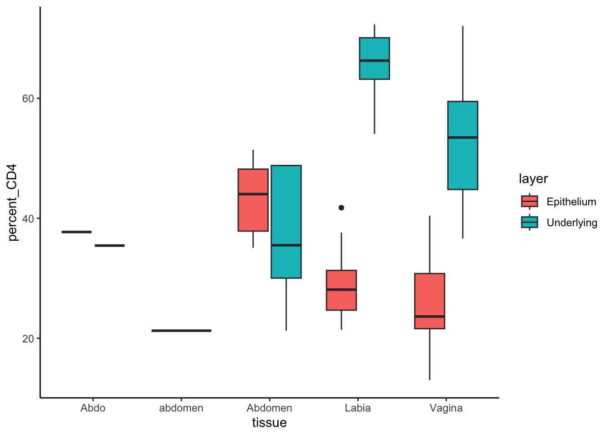
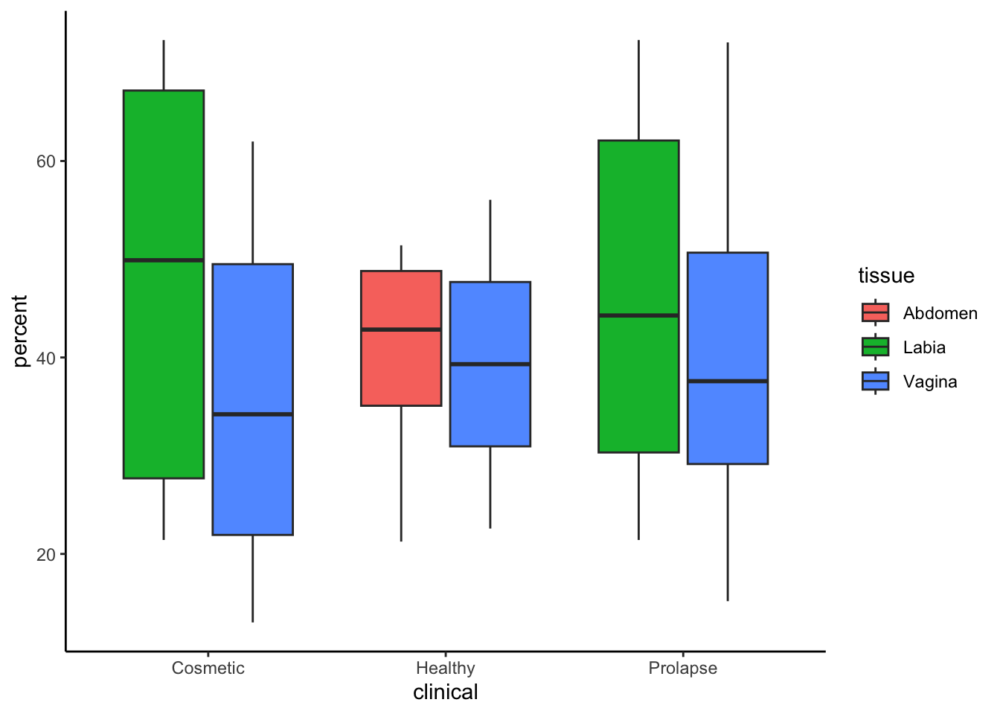
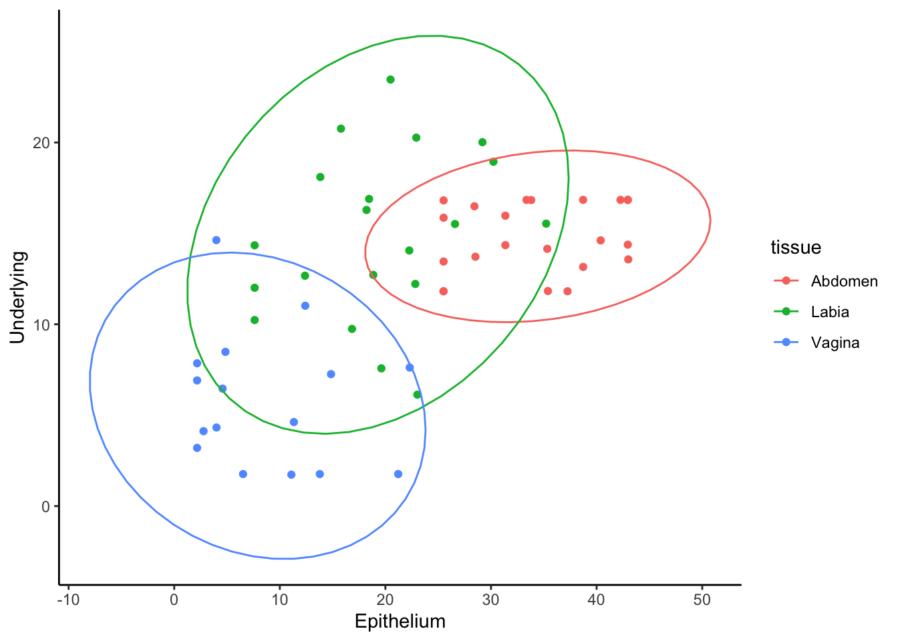

Tidyverse 2: Data Manipulation
Thomas O’Neil
2025-02
Last updated: 2025-02-24
Checks: 7 0
Knit directory: analysis-user-group/
This reproducible R Markdown analysis was created with workflowr (version 1.7.1). The Checks tab describes the reproducibility checks that were applied when the results were created. The Past versions tab lists the development history.
Great! Since the R Markdown file has been committed to the Git repository, you know the exact version of the code that produced these results.
Great job! The global environment was empty. Objects defined in the global environment can affect the analysis in your R Markdown file in unknown ways. For reproduciblity it’s best to always run the code in an empty environment.
The command set.seed(1337) was run prior to running the
code in the R Markdown file. Setting a seed ensures that any results
that rely on randomness, e.g. subsampling or permutations, are
reproducible.
Great job! Recording the operating system, R version, and package versions is critical for reproducibility.
Nice! There were no cached chunks for this analysis, so you can be confident that you successfully produced the results during this run.
Great job! Using relative paths to the files within your workflowr project makes it easier to run your code on other machines.
Great! You are using Git for version control. Tracking code development and connecting the code version to the results is critical for reproducibility.
The results in this page were generated with repository version c9db666. See the Past versions tab to see a history of the changes made to the R Markdown and HTML files.
Note that you need to be careful to ensure that all relevant files for
the analysis have been committed to Git prior to generating the results
(you can use wflow_publish or
wflow_git_commit). workflowr only checks the R Markdown
file, but you know if there are other scripts or data files that it
depends on. Below is the status of the Git repository when the results
were generated:
Ignored files:
Ignored: .DS_Store
Ignored: analysis/.DS_Store
Ignored: analysis/data/
Ignored: analysis/figure/
Unstaged changes:
Modified: workflow.R
Note that any generated files, e.g. HTML, png, CSS, etc., are not included in this status report because it is ok for generated content to have uncommitted changes.
These are the previous versions of the repository in which changes were
made to the R Markdown (analysis/202502_tidyverse2.Rmd) and
HTML (docs/202502_tidyverse2.html) files. If you’ve
configured a remote Git repository (see ?wflow_git_remote),
click on the hyperlinks in the table below to view the files as they
were in that past version.
| File | Version | Author | Date | Message |
|---|---|---|---|---|
| Rmd | c9db666 | DrThomasOneil | 2025-02-24 | wflow_publish(c("analysis/*.Rmd")) |
| html | af42fba | DrThomasOneil | 2025-02-24 | Build site. |
| Rmd | 24a9fef | DrThomasOneil | 2025-02-24 | wflow_publish(c("analysis/*.Rmd")) |
| html | 1aeefc7 | DrThomasOneil | 2025-02-20 | Build site. |
| Rmd | 756ebac | DrThomasOneil | 2025-02-20 | wflow_publish(c("analysis/*.Rmd")) |
| html | 5fe30de | DrThomasOneil | 2025-02-20 | Build site. |
| Rmd | 477062c | DrThomasOneil | 2025-02-20 | wflow_publish(c("analysis/*.Rmd")) |
| Rmd | a48de9d | DrThomasOneil | 2025-02-20 | new data |
Introduction
In this tutorial, we explore the functionalities of the Tidyverse by working with two datasets:
data.csvcontains fabricated summary flow cytometry data, such as cell numbers and MFImeta.csvcontains information regarding each donor, such as age and sex.
The Tidyverse is a collection of R packages that share an underlying design philosophy and grammar, making data analysis more intuitive and coherent. Here are some key benefits:
dplyr: Provides a suite of verbs
(e.g. filter(), mutate(),
select(), and left_join()) that simplify data
manipulation. For example, left_join() easily combines
experimental data with metadata based on a common key. See the Introduction
to R: Chapter 4 for more content on dplyr.
Pipes (%>%): Enhance code readability by allowing you to chain multiple operations in a sequential, natural-language style. This means you can finalise complex data transformations in a single, clear pipeline without the need for numerous intermediate variables.
tidyr: Focuses on tidying data, ensuring that each
observation occupies a single row and each variable a single column.
Functions like pivot_longer() and pivot_wider() help
reshape data into a standard format, which is essential for further
analysis.
ggplot2: Offers a powerful and flexible grammar for data visualisation. With ggplot2, you can create customised plots that effectively communicate insights from your data, building on the clean, tidy data produced by the other Tidyverse packages. See the Introduction to R: Chapter 5-6 and the previous workshop by Harry for extra information on ggplot.
Goals: Learn data manipulation with Tidyverse
• Tidy Data
• Select and Mutate data
• Group and summarise
data
• Join two data frames
• Pivot data with
tidyr
Whether you are combining datasets, reshaping data, or creating compelling graphics, the Tidyverse offers a consistent and powerful set of tools to support your analysis.
Set up
Follow these instructions to get started:
1. Save this script in a folder called
“202502_Tidyverse2”
- Install and load the relevant packages and functions
── Attaching core tidyverse packages ──────────────────────── tidyverse 2.0.0 ──
✔ dplyr 1.1.4 ✔ readr 2.1.5
✔ forcats 1.0.0 ✔ stringr 1.5.1
✔ ggplot2 3.5.1 ✔ tibble 3.2.1
✔ lubridate 1.9.4 ✔ tidyr 1.3.1
✔ purrr 1.0.4
── Conflicts ────────────────────────────────────────── tidyverse_conflicts() ──
✖ dplyr::filter() masks stats::filter()
✖ dplyr::lag() masks stats::lag()
ℹ Use the conflicted package (<http://conflicted.r-lib.org/>) to force all conflicts to become errorstheme_set(theme_classic())
source(url("https://raw.githubusercontent.com/DrThomasOneil/SkillTrees/refs/heads/main/assets/.functions.R")) - Create new folders in your directory.
- Download the data.
download.file(url="https://raw.githubusercontent.com/DrThomasOneil/analysis-user-group/refs/heads/main/docs/r-tutorial/assets/synthetic_data.csv",
destfile = "data/data.csv", method='curl', mode='wb')
download.file(url="https://raw.githubusercontent.com/DrThomasOneil/analysis-user-group/refs/heads/main/docs/r-tutorial/assets/meta.csv",
destfile = "data/meta.csv", method='curl', mode='wb')- Load data into R
Data Wrangling with dplyr
First, we can quickly explore the data.
We have 5 categorical columns and 8 numeric values.
- CD3, CD8, CD4, HLADR and CCR5 appear to be cell counts.
- CD28 appears to be as a percentage already.
Dropdown for interactive session
You can only use this in your personal sessions.
This immediately reveals some issues where our data needs tidying, but we’ll cover these in the next workshop.
Filtering, Selecting, and Mutating data: dplyr().
The dplyr package is a powerful tool for data
manipulation in R. It provides a set of functions that make it easy to
filter, arrange, group, and summarize data. Some of the most commonly
used functions in dplyr are:
experiment donor tissue layer group CD3 CD8 CD4 HLADR CCR5
1 Exp1 Donor1 Abdomen Epithelium A_E 4460 2205 2184 882 1932
2 Exp1 Donor1 Abdomen Underlying A_UM 15295 7960 5529 808 3916
3 Exp2 Donor2 Abdomen Epithelium A_E 49774 25149 25251 10671 22763
4 Exp2 Donor2 Abdomen Underlying A_UM 68879 47729 33616 5662 27725
HLADR_MFI CCR5_MFI CD28
1 652.0000 4455.553 29.6
2 471.4750 7121.196 59.8
3 652.0000 3666.176 72.8
4 206.1183 2025.143 89.2filter(): to filter rows based on a condition
experiment donor tissue layer group CD3 CD8 CD4 HLADR CCR5
1 Exp1 Donor1 Abdomen Epithelium A_E 4460 2205 2184 882 1932
2 Exp2 Donor2 Abdomen Epithelium A_E 49774 25149 25251 10671 22763
3 Exp2 Donor3 Abdomen Epithelium A_E 208665 92410 84610 26531 68033
4 Exp3 Donor4 Abdomen Epithelium A_E 4460 2272 2293 985 2082
HLADR_MFI CCR5_MFI CD28
1 652 4455.553 29.6
2 652 3666.176 72.8
3 858 7065.873 62.0
4 858 9238.000 65.6arrange(): to reorder rows
experiment donor tissue layer group CD3 CD8 CD4 HLADR CCR5
1 Exp1 Donor1 Abdomen Epithelium A_E 4460 2205 2184 882 1932
2 Exp1 Donor1 Abdomen Underlying A_UM 15295 7960 5529 808 3916
3 Exp1 Donor16 Vagina Epithelium V_E 30109 17011 6596 263 6264
4 Exp1 Donor16 Vagina Underlying V_UM 30774 16713 22180 3245 18958
HLADR_MFI CCR5_MFI CD28
1 652.0000 4455.553 29.6
2 471.4750 7121.196 59.8
3 62.1126 3078.970 52.6
4 192.5019 3534.601 0.0select(): to select columns
CD4
1 262
2 472
3 596
4 596mutate(): to create new columns.
data %>%
mutate(CD4_percent = 100*CD4/CD3) %>%
select(CD4_percent, CD3, CD4) %>%
head(4) %>%
print() CD4_percent CD3 CD4
1 48.96861 4460 2184
2 36.14907 15295 5529
3 50.73131 49774 25251
4 48.80443 68879 33616Grouping and Summarising
Grouping and summarising in the Tidyverse allows you to split your
data into subsets using group_by() and then compute
aggregate statistics for each subgroup with summarise().
This approach enables quick, clear insights into trends and differences
within your data by reducing complex datasets to meaningful
summaries.
data %>%
mutate(percent_CD4 = 100*CD4/CD3) %>%
ggplot(aes(tissue, percent_CD4, fill=layer))+geom_boxplot()
| Version | Author | Date |
|---|---|---|
| 5fe30de | DrThomasOneil | 2025-02-20 |
data %>%
mutate(percent_CD4 = 100*CD4/CD3) %>%
group_by(tissue, layer) %>%
summarise(mean_CD4 = mean(percent_CD4),
median_CD4 = median(percent_CD4)) %>%
print()`summarise()` has grouped output by 'tissue'. You can override using the
`.groups` argument.# A tibble: 9 × 4
# Groups: tissue [5]
tissue layer mean_CD4 median_CD4
<chr> <chr> <dbl> <dbl>
1 Abdo Epithelium 37.7 37.7
2 Abdo Underlying 35.5 35.5
3 Abdomen Epithelium 43.3 44.0
4 Abdomen Underlying 37.2 35.5
5 Labia Epithelium 28.8 28.1
6 Labia Underlying 65.9 66.3
7 Vagina Epithelium 26.0 23.6
8 Vagina Underlying 52.5 53.5
9 abdomen Underlying 21.3 21.3Joining Data Frames
Combining data from multiple sources is often necessary, even when the datasets don’t align perfectly. For instance, your long-format data might include multiple entries per donor for tissues like epithelium and mucosa, while the metadata contains donor-specific details that you prefer not to duplicate.
experiment donor tissue layer group CD3 CD8 CD4 HLADR CCR5
1 Exp1 Donor1 Abdomen Epithelium A_E 4460 2205 2184 882 1932
2 Exp1 Donor1 Abdomen Underlying A_UM 15295 7960 5529 808 3916
HLADR_MFI CCR5_MFI CD28
1 652.000 4455.553 29.6
2 471.475 7121.196 59.8 donor experiment date sex age clinical
1 Donor1 Exp1 19/2/2024 F 35 HealthySo we expect Donor 1 to be a female, aged 35 and classified Healthy
data %>%
select(-experiment)%>% # we can remove columns using select(-...)
right_join(meta, by="donor") %>%
filter(donor == "Donor1") donor tissue layer group CD3 CD8 CD4 HLADR CCR5 HLADR_MFI CCR5_MFI
1 Donor1 Abdomen Epithelium A_E 4460 2205 2184 882 1932 652.000 4455.553
2 Donor1 Abdomen Underlying A_UM 15295 7960 5529 808 3916 471.475 7121.196
CD28 experiment date sex age clinical
1 29.6 Exp1 19/2/2024 F 35 Healthy
2 59.8 Exp1 19/2/2024 F 35 HealthyWith this, we wouldn’t need to save a combined dataframe to analyse.
data %>%
select(-experiment)%>%
right_join(meta, by="donor") %>%
filter(tissue != "Abdo" & tissue != 'abdomen') %>% # remove errors
mutate(percent = 100*CD4/CD3) %>%
ggplot(aes(clinical, percent, fill=tissue))+
geom_boxplot(outliers=F)
| Version | Author | Date |
|---|---|---|
| 5fe30de | DrThomasOneil | 2025-02-20 |
Reshaping Data with tidyr
tidyr provides essential tools like
pivot_longer() and pivot_wider() to transform
your dataset between long and wide formats. This reshaping makes it
easier to align variables and observations for analysis, ensuring that
each variable forms a column and each observation a row. Such
flexibility is crucial when preparing complex experimental or single
cell RNA sequencing data for further analysis and visualisation.
long format
In long format, each observation is represented by a single row, with
one column holding the categorical variable (e.g. the type of
measurement) and another column holding the corresponding values. This
format is particularly useful for generating boxplots or other
visualisations that compare distributions across groups.
For example, if you want to compare the percentages of CD4 and CD8 cells on the same plot, you can pivot the data longer:
data %>%
filter(tissue != "Abdo" & tissue != 'abdomen') %>% # remove errors
mutate(CD4percent = 100*CD4/CD3,
CD8percent = 100*CD8/CD3) %>%
# pivot longer - select the columns, and the name of the columns for the names and values
pivot_longer(cols = c(CD4percent, CD8percent),
names_to = "subset",
values_to = "percent") %>%
select(-c(experiment,group,CCR5_MFI,HLADR_MFI,CD3,CD8,CD4,HLADR,CCR5,CD28))%>%
head(8) %>%
print()# A tibble: 8 × 5
donor tissue layer subset percent
<chr> <chr> <chr> <chr> <dbl>
1 Donor1 Abdomen Epithelium CD4percent 49.0
2 Donor1 Abdomen Epithelium CD8percent 49.4
3 Donor1 Abdomen Underlying CD4percent 36.1
4 Donor1 Abdomen Underlying CD8percent 52.0
5 Donor2 Abdomen Epithelium CD4percent 50.7
6 Donor2 Abdomen Epithelium CD8percent 50.5
7 Donor2 Abdomen Underlying CD4percent 48.8
8 Donor2 Abdomen Underlying CD8percent 69.3This code creates a new column subset that indicates
whether the value corresponds to %CD4 or %CD8,
and a column percent for the computed values. The data is
now structured with one column for the measurement type and another for
the percentage, making it straightforward to plot:
data %>%
filter(tissue != "Abdo" & tissue != 'abdomen') %>% # remove errors
mutate(CD4percent = 100*CD4/CD3,
CD8percent = 100*CD8/CD3) %>%
# pivot longer - select the columns, and the name of the columns for the names and values
pivot_longer(cols = c(CD4percent, CD8percent),
names_to = "subset",
values_to = "percent") %>%
ggplot(aes(layer,percent, fill=subset))+
geom_boxplot()
| Version | Author | Date |
|---|---|---|
| 5fe30de | DrThomasOneil | 2025-02-20 |
wide format
Sometimes you want to examine relationships between measurements
directly—for example, to see if there’s a relationship between values
from different layers (e.g. Epithelium and Underlying mucosa). In wide
format, each type of measurement occupies its own column. This structure
is ideal for scatterplots or correlation analyses.
Consider this example where we pivot the data to have separate columns for each layer:
data %>%
filter(tissue != "Abdo" & tissue != 'abdomen') %>% # remove errors
mutate(percent = 100*HLADR/CD4) %>%
select(donor,tissue,layer,percent) %>%
pivot_wider(names_from = layer, values_from = percent) %>%
ggplot(aes(x=Epithelium, y=Underlying, color=tissue))+
geom_point()+
stat_ellipse()
| Version | Author | Date |
|---|---|---|
| 5fe30de | DrThomasOneil | 2025-02-20 |
Here, the pivot_wider() function converts the long data into a wide
format where separate columns for Epithelium and Underlying values are
created. This allows you to directly plot and explore relationships
between these layers using scatterplots, with
stat_ellipse() adding confidence ellipses to highlight
group trends.
Both long and wide formats serve specific purposes in data analysis and visualisation. Long format is flexible for creating grouped comparisons, while wide format facilitates direct relationship analysis between variables.
Conclusions
In conclusion, this tutorial has demonstrated how the
Tidyverse streamlines data analysis by providing a
coherent set of tools that simplify data manipulation, reshaping, and
visualisation. Using dplyr, we efficiently filtered,
mutated, grouped, summarised, and joined our experimental and metadata,
while the use of pipes (%>%) allowed us to finalise
complex workflows in a readable and intuitive manner.
Additionally, tidyr enabled us to transform our data
between long and wide formats, ensuring that it is in the optimal
structure for analysis. With ggplot2, these tidy datasets were then
translated into compelling graphics that highlight key patterns and
relationships. Together, these tools empower analysts to create
reproducible and insightful workflows, ultimately enhancing the rigour
and clarity of data-driven research.
R version 4.4.0 (2024-04-24)
Platform: aarch64-apple-darwin20
Running under: macOS Sonoma 14.3
Matrix products: default
BLAS: /Library/Frameworks/R.framework/Versions/4.4-arm64/Resources/lib/libRblas.0.dylib
LAPACK: /Library/Frameworks/R.framework/Versions/4.4-arm64/Resources/lib/libRlapack.dylib; LAPACK version 3.12.0
locale:
[1] en_US.UTF-8/en_US.UTF-8/en_US.UTF-8/C/en_US.UTF-8/en_US.UTF-8
time zone: Australia/Sydney
tzcode source: internal
attached base packages:
[1] stats graphics grDevices utils datasets methods base
other attached packages:
[1] lubridate_1.9.4 forcats_1.0.0 stringr_1.5.1 dplyr_1.1.4
[5] purrr_1.0.4 readr_2.1.5 tidyr_1.3.1 tibble_3.2.1
[9] ggplot2_3.5.1 tidyverse_2.0.0 shiny_1.10.0 workflowr_1.7.1
loaded via a namespace (and not attached):
[1] utf8_1.2.4 sass_0.4.9 generics_0.1.3 stringi_1.8.4
[5] hms_1.1.3 digest_0.6.37 magrittr_2.0.3 timechange_0.3.0
[9] evaluate_1.0.3 grid_4.4.0 fastmap_1.2.0 rprojroot_2.0.4
[13] jsonlite_1.8.9 processx_3.8.4 whisker_0.4.1 ps_1.8.1
[17] promises_1.3.2 httr_1.4.7 scales_1.3.0 jquerylib_0.1.4
[21] cli_3.6.3 rlang_1.1.5 munsell_0.5.1 withr_3.0.2
[25] cachem_1.1.0 yaml_2.3.10 tools_4.4.0 tzdb_0.4.0
[29] colorspace_2.1-1 httpuv_1.6.15 vctrs_0.6.5 R6_2.5.1
[33] mime_0.12 lifecycle_1.0.4 git2r_0.35.0 fs_1.6.5
[37] MASS_7.3-61 pkgconfig_2.0.3 callr_3.7.6 pillar_1.10.1
[41] bslib_0.9.0 later_1.4.1 gtable_0.3.6 glue_1.8.0
[45] Rcpp_1.0.14 xfun_0.50 tidyselect_1.2.1 rstudioapi_0.17.1
[49] knitr_1.49 farver_2.1.2 xtable_1.8-4 htmltools_0.5.8.1
[53] labeling_0.4.3 rmarkdown_2.29 compiler_4.4.0 getPass_0.2-4